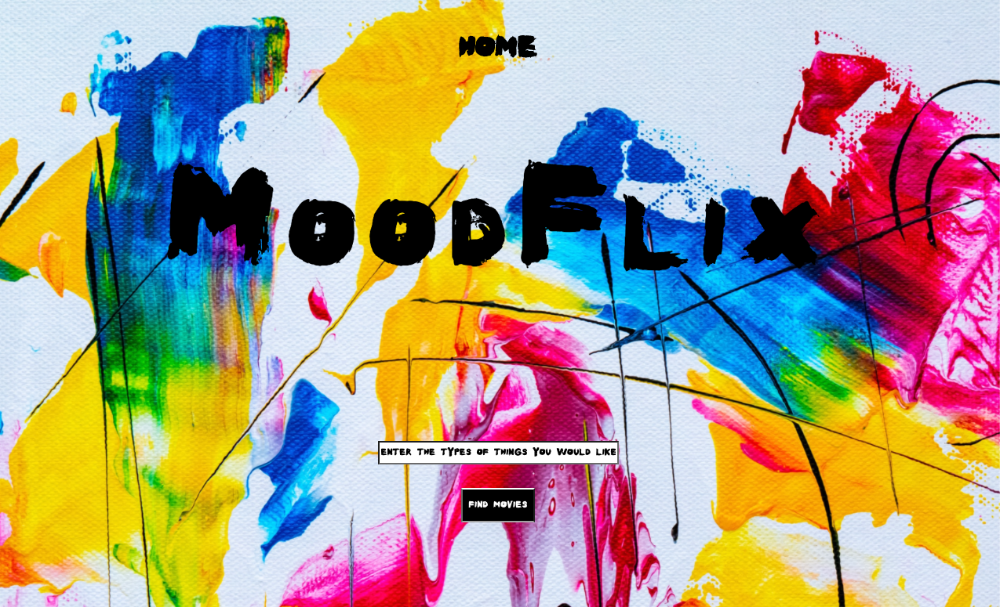

Eduardo Gutierrez
Software Developer
We have not even to risk the adventure alone for the heroes of all time have gone before us. The labyrinth is thoroughly known ... we have only to follow the thread of the hero path. And where we had thought to find an abomination we shall find a God. And where we had thought to slay another we shall slay ourselves. Where we had thought to travel outwards we shall come to the center of our own existence. And where we had thought to be alone we shall be with all the world.
- Joseph Campbell
About Me
I am currently a Salesforce Developer at Cognizant. My sojourn into development has just begun and although the path before me is difficult and fraught with unknown challenges, highs, and lows I look ahead with excitement and humility.
My past experience has given me valuable skills that will aid in my pursuit of mastering the art of software development and beyond. My background has also sharpened my communication, and problem-solving skills. As a manager, I fostered an environment of creativity and encouraged experimentation to develop new ways of accomplishing tasks. Enabling others to voice their opinions and creating an outlet for their ingenuity led to new interesting and efficient manufacturing techniques. Collaboration and respect for the impact that a variety of perspectives and experiences can bring to solving a problem are the main lessons I’ve learned from my past positions and will aid me on my current journey.
Portfolio
Capstone Project Mood Flix:
 I personally built a web app that allows users to input a description of what they’re in the mood for and mood flix will return a movie that will match the user’s input. I used Ruby on Rails to create the backend and integrated the IMDB api to retrieve information about the movie. I also integrated Google's Natural Language Processing, specifically, the entity analysis on the user’s input to retrieve an array of entities that I use to compare and match entities generated from running the entity analysis on the plot summaries and genres of each title and assigned them to a separate table in my backend.
Mood Flix